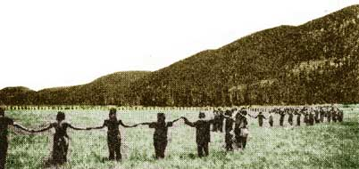

This is the fourth year that the Rainbow Family has called for a gathering together of all people (see pages 57-59, LIFESTYLE! NO. 2) . . . and perhaps 1975 is a more important time than ever to reaffirm and celebrate the spiritual "oneness" of brothers and sisters of the world. In the Family's own words, it will be an opportunity "for us to come together, to awaken to the tasks before us, and to learn what each of us is doing all over the country . . . it will be a steppingstone towards the future."
This year's "Gathering of the Tribes" will take place in the Arkansas Ozarks. There's no admission fee to pay, and-as in the past--people will be free to "plug into" a wide variety of activities, workshops, discussions, and special projects. A general council meeting will be held daily, and alternative lifestyles and energy sources-as well as planning for the "1978 Rainbow Gathering and World's Fair"-will receive particular emphasis.
The event is a huge project (some 20,000 people attended the first Gathering!) and folks are asked to some prepared with adequate supplies of food and shelter. There's lots to be done to get ready for the celebration, too-including building a customs house, community kitchen, Indian lodge, hospital, and sanitation facilities-so if you'd like to contribute your energies, just let the Rainbow folks know in advance and come one or two weeks early. Dollars, of course, are much needed, and contributions are gratefully welcomed.
To receive an invitation to the Gathering-with full details and a copy of the Rainbow Family's newsletter-send $1.00 (to cover printing costs) and a large, self-addressed envelope stamped with 20 cents postage to The Rainbow Family, P.O. Box 483, Little Rock, Ark. 72203. (An Arkansas-wide toll-free "hotline" will be open beginning in June for up-to-the-minute information: If you're in the state, dial [8001 482-8886.) And if you just can't make it to the "main event", write to the Family anyway . . . they're now planning a traveling
Rainbow Caravan, and will try to hold re gional "Gatherings of the Tribe" wherever there's enough interest!-TK.
|
|
 |
|